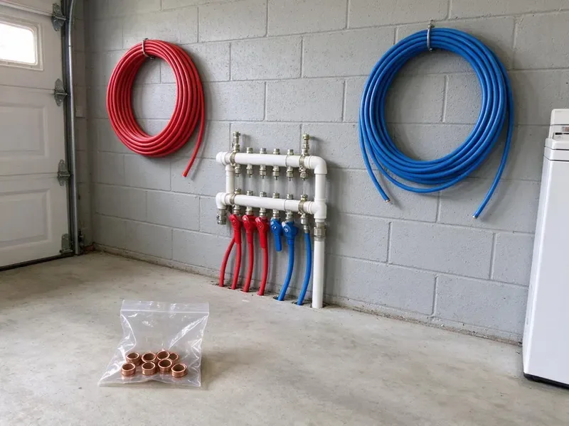

Gas Water Heater Installation in Springdale, AR
Ensure your Springdale, AR home has a dependable hot water supply with gas water heater installation from DGR Plumbing. We handle all parts of the job with precision.
- Skilled, Certified Plumbers
- Prompt, Reliable Installations
- Transparent Pricing
- Upfront Pricing

Expert Gas Water Heater Installation Services in Springdale, AR.
Our team is ready to provide safe and efficient installation services for your home.
Professional Gas Water Heater Installation for Springdale, AR Homes
DGR Plumbing provides top-tier gas water heater installation services throughout Springdale, AR. Our licensed plumbers make sure your new unit is installed correctly and safely, meeting all local codes and manufacturer specifications.
Our expertise includes:
- Natural gas and propane conversions and connections
- Leak-free gas line connections
- Correct venting and combustion air setup

Additional Plumbing Installation Services in Springdale, AR
We install water heaters, pumps, lines, and fixtures across Springdale, AR with precision workmanship that meets every local code.


Customers
Why Choose DGR Plumbing for Gas Water Heater Installation in Springdale, AR?
Our plumbers install every gas water heater to manufacturer specs and local code. We test for leaks, check draft and confirm safe operation.
- Longer Lifespan, Professional installation minimizes wear and tear, extending the life of your gas water heater.
- Fast Recovery, Gas heaters reheat water quickly for busy households.
- Leak Tested, Every gas connection is tested before the heater is turned on.
Citywide Coverage
DGR Plumbing proudly serves every neighborhood in and around Springdale for all gas water heater installation needs. Whether you're in an older district or a newer subdivision, our team is ready to help you.
Experienced Team
Every technician at DGR Plumbing is well trained in gas water heater installation, delivering a precise and secure setup. We stand behind our team's expertise and commitment to quality workmanship.
Safety-First Approach
Gas water heaters must have proper combustion air, venting and clearances. We install these correctly and check draft to prevent carbon monoxide risks.
Trusted Certified Springdale Plumbing Services Professionals
At DGR Plumbing, we take pride in providing licensed, certified plumbing services throughout Springdale, AR. Backed by leading industry credentials, our experienced plumbers combine technical skill with genuine customer care. Whether it is repair, installation, or maintenance, we follow strict safety and quality standards to deliver lasting results you can trust.
Call Us Now PHCC Plumbing Contractor Recognition
PHCC Plumbing Contractor Recognition Better Business Bureau (BBB) Accreditation
Better Business Bureau (BBB) Accreditation Angi Certified Pro
Angi Certified Pro ISO 9001 Quality Management Certification
ISO 9001 Quality Management CertificationSafe Gas Water Heater Installation Services in Springdale, AR
Gas Water Heater Installation Cost in Springdale, AR
Standard atmospheric vent gas water heaters usually cost less to install than power vent or tankless units. Venting changes, gas line upgrades and code corrections can add cost. We provide a written quote that includes the unit, labor, permits and haul-away. We also compare operating costs between gas and electric models. That helps you choose the best long-term value.

Direct Vent Gas Water Heater Installation in Springdale
Direct vent water heaters draw combustion air from outside and vent exhaust through a sealed system. They are a good choice for tight utility rooms or interior closets. We install the vent kit through an exterior wall with proper clearances. Many direct vent models do not need electricity. They offer safe, efficient operation.
Gas Line Upgrades for Water Heaters in Springdale, AR
Upgrading to a larger or tankless gas water heater may require more gas flow. We calculate total BTU demand and pipe length to size the line correctly. We install black iron or CSST piping and bond it where required. A properly sized line prevents low flame and weak performance. We pressure test new lines before service.
Emergency Gas Water Heater Replacement in Springdale, AR
When your gas water heater suddenly fails, you need a fast and reliable replacement. DGR Plumbing offers emergency gas water heater installation services in Springdale, AR to restore your hot water quickly. We stock common models and can often provide same-day installation, ensuring downtime to a minimum. Our team puts safety first during these urgent replacements, performing careful checks on gas and water lines before leaving your property.
Commercial Gas Water Heater Installation in Springdale
Businesses in Springdale often have high demands for hot water, requiring robust commercial-grade gas water heaters. DGR Plumbing installs commercial units for various establishments, from restaurants to laundromats. These installations involve larger gas lines, specialized venting and often multiple units. We work efficiently to minimize disruption to your operations while making sure your business has a reliable hot water supply that meets all health and safety codes.
Brands We Install in Springdale
We install all major brands of gas water heaters commonly found in Springdale homes and businesses. Our expertise covers Rheem, Bradford White, A.O. Smith, Navien and Rinnai, among others. We can advise you on the best brand and model to suit your hot water demands and budget.
Proper Sizing and Venting in Springdale, AR
Correct sizing and venting are crucial for the safe and efficient operation of any gas water heater in Springdale, AR. We calculate your household's hot water needs to recommend the right capacity and ensure that all venting is installed according to manufacturer specifications and local codes to prevent carbon monoxide buildup.

Gas Water Heater Replacement in Springdale
When your old gas water heater fails or becomes inefficient, DGR Plumbing provides swift replacement services in Springdale. We'll help you choose a good replacement unit, handle all necessary plumbing and gas connections and arrange proper disposal of your old water heater, minimizing disruption to your home.
Gas Water Heater Installation Near Me in Springdale, AR
When you search for 'gas water heater installation near me' in Springdale, AR, DGR Plumbing is your trusted local choice. We understand the plumbing challenges and codes in our area. Our prompt response times and local expertise mean you get the right solution for your home, fast.
Our team knows local fuel gas code and inspection requirements. We install every unit with safety and longevity in mind. You get dependable hot water and peace of mind.
DGR Plumbing at a Glance
- Licensed and insured plumbers serving Springdale, AR
- Same-day appointments and 24/7 emergency response
- Clear written estimates, no hidden fees
- 4.8-star rated by 871+ Arkansas customers
Springdale Map
Springdale Information
- Population
- 88,224
- Area codes
- 479/501/870
- Service area
- Springdale and communities within 40 miles
- Nearby
- Fayetteville, Rogers, Bentonville, Bella Vista
A properly installed gas water heater in Springdale, AR is crucial for reliable performance and long life, and it protects your home's plumbing system from leaks and pressure problems. Rural wells in Arkansas often carry iron, sediment, or a sulfur odor, which can stain fixtures and foul aerators and water heaters.
Expert Services
Trust our professionals for reliable DGR Plumbing solutions in Springdale, AR.
Our Specialized Plumbing Services in Springdale, AR
At DGR Plumbing, we provide a complete range of plumbing services across Springdale, AR. From leak detection to full system installations, our team ensures fast, precise, and affordable service for both residential and commercial properties. Explore our core services below:


How Our Gas Water Heater Installation Process Works in Springdale, AR
DGR Plumbing follows a clear, step-by-step process to make sure every gas water heater installation in Springdale, AR is done right.
Request a Quote
Call (501) 251-9708 and tell us about your current water heater and gas setup. We suggest options and provide upfront pricing.
Remove and Prepare
We shut off gas and water, drain and remove the old heater and inspect the venting and gas line. Any needed upgrades are made before installation.
Install and Test
We install the new heater, connect gas and water and test for leaks. Then we light the burner, check draft and explain basic maintenance.
Frequently Asked Questions About Gas Water Heater Installation in Springdale
The cost for a gas water heater installation in Springdale usually ranges from $1,200 to $3,000, depending on the unit size, type (tank vs. tankless) and any necessary gas line or venting modifications. We provide a detailed, upfront quote after a site assessment.
Most new gas water heaters come with a manufacturer's warranty ranging from 6 to 12 years on the tank and components. DGR Plumbing also provides a warranty on our installation labor. We will explain both during your consultation.
Common signs include a lack of hot water, rust-colored water, strange noises like rumbling or popping from the tank, or visible leaks around the base of the unit. Older units, especially those over 10 to 12 years old, are also candidates for replacement.
Installing a gas water heater involves working with natural gas lines, water lines and exhaust venting, which can be dangerous if not done correctly. Improper installation can lead to gas leaks, carbon monoxide poisoning or water damage. It is strongly recommended to hire a licensed professional for safety and code compliance.
Manufacturer warranties usually range from 6 to 12 years. We also warranty our installation labor.
We install all major trusted brands of gas water heaters, including Rheem, Bradford White, A. O. Smith, State Water Heaters and Navien for tankless models. We can help you choose the best brand and model for your particular needs and budget.
Regular maintenance, such as annual flushing of the tank to remove sediment and checking the anode rod, can significantly extend your gas water heater's lifespan. Our team can advise on best practices and offer maintenance services.
New gas water heaters typically come with a manufacturer's warranty ranging from 6 to 12 years on the tank and components. DGR Plumbing also provides a labor warranty on our installation services, ensuring peace of mind.
What People Are Saying About Our Plumbing Experts?

James P.
Our commercial plumbing system had a leak under the sink, and DGR Plumbing handled it professionally. The plumbers arrived quickly and restored everything without disruption to our customers.
Commercial Plumbing · Fayetteville, AR
Daniel K.
A pipe burst at 11 pm and they actually answered. The plumber showed up within the hour, shut everything down, and had us back to normal the next morning. Could not ask for more.
Emergency Plumbing · Conway, AR
Patricia H.
We had a slab leak that two other companies could not find. DGR Plumbing located it in under an hour, explained our options, and the price matched the quote to the dollar.
Slab Leak Repair · Springdale, ARRobert G.
The trenchless sewer replacement saved our front yard. They walked us through the camera inspection footage first so we knew exactly what we were paying for.
Sewer Line Replacement · Bentonville, AR
Emily R.
I called DGR Plumbing for plumbing repair, and the technician was fast, polite, and thorough. They explained the problem clearly and fixed it the same day. I will definitely hire them again. Highly recommended!
Plumbing Repair · Conway, AR
Mark T.
When our office needed drain cleaning, DGR Plumbing provided quick, reliable service. The plumber arrived on time and made sure every drain flowed perfectly before leaving. Very satisfied.
Drain Cleaning · Rogers, AR